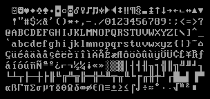

About me
Greetings, my name is Luis, I'm Bilingual [English / Spanish ] I created this static website only using HTM, CSS, and Vanilla JavaScript, currently I’m working at Cisco Systems, and also I’m a code coach at: The coder school Milpitas CA, anybody is able to teach coding but not everyone can tech it in a way that keeps the students entertained, and helps them understand advanced concepts, like: Data structures and Algorithms, or web development, just like the boring teaches I had in high school, I also had teachers who were passionate about their work, and I could really root for them, If I ever wanted to become a teacher I always wanted to be like the ones I rooted for, since I believe it’s important to be passionate and understand the students, many people overlook the skills and potential of their kids, so with the right guidance, they can achieve many wonderful things, specially if they want to learn about computer science and programming.
Motivation
It all started in 1996, I remember my dad purchased a computer with windows 95 in it, everybody in my family was excited to see what it could do, and at the time, my oldest sister was taking after school IT courses, so she knew more about computers at that time,
I remember she was telling me about how to navigate trough the console, and then I’m not sure if it was a Basic program or a command in MS-Dos, that displayed: “Code Page 437”

when I looked at it, it was like I was witnessing some kind of magic runes on the screen,
then she typed the cls command, which clears the screen in the console, and everything was gone.
At that moment it felt like I just witness something magical, I was very exited and I wanted to learn more about it,
unfortunately when my parents enrolled me into after school IT , the instructor was very dull and boring, every time I went in there I wanted to understand how a computer works,
but at the same time In was trying not to fall asleep, and I don’t blame him,
explaining computer science is not easy to explain to a kid, or make it sound exiting, specially when it comes to teaching low level concepts.
After being demotivated I wasted most of my time playing games in MS-Dos, and little did I know I already had the skills to reboot a pc, mount a floppy, and even navigate trough the console with ease,
which I didn’t even know it was going to help me out in my future career,
this is the main reason, why I put a lot of effort into making my coding sessions as interesting as I can,
and since most kids love to play videogames, I like to show them some computer graphics and then they get exited about it,
once you understated how they want to learn they can achieve a lot, I had a student at Palo Alto who was 5 years old,
and he understood how to code in C++ very fast, just like I had 2 other students at Milpitas,
who already understood Data Structures and algorithms, like I mention previously,
it takes passion and dedication in order to make the sessions interesting and exiting,
and who knows, perhaps one of my students might develop the newest technology In the market.
Experience
| Employer | Job Title | Date | Reason for leaving |
|---|---|---|---|
| Cisco Systems | Systems Admin | Currently working | Currently working |
| The Coder School Milpitas | Code Coach | July/07/2025 | resigned |
| Cisco Systems | Data Center Technician | Mar/2023 - Jan/2024 | promoted to Systems Admin |
| The Coder School Palo Alto | Code Coach | Feb/2022 - Dec/2022 Resigned | It's complicated |
Skills
C
C++
Java
Python
Springboot
HTML
CSS
JavaScript
NodeJS
Linux and Bash
SQL
Certificates